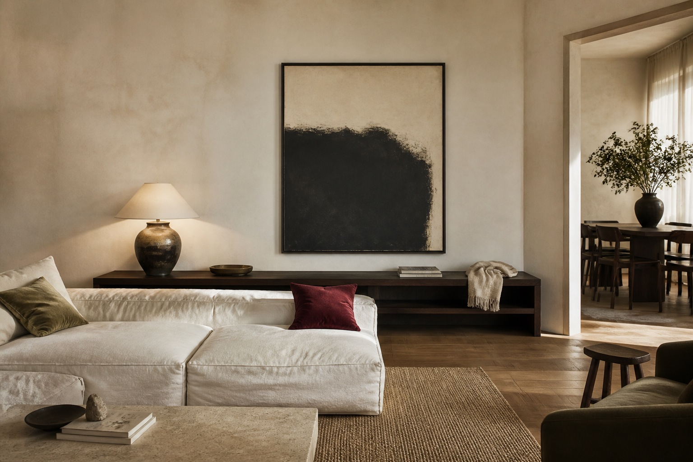
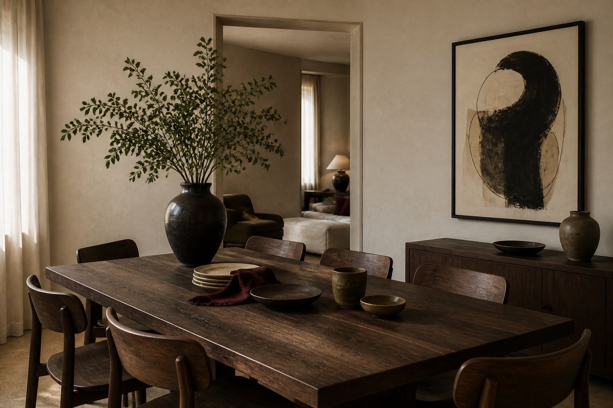
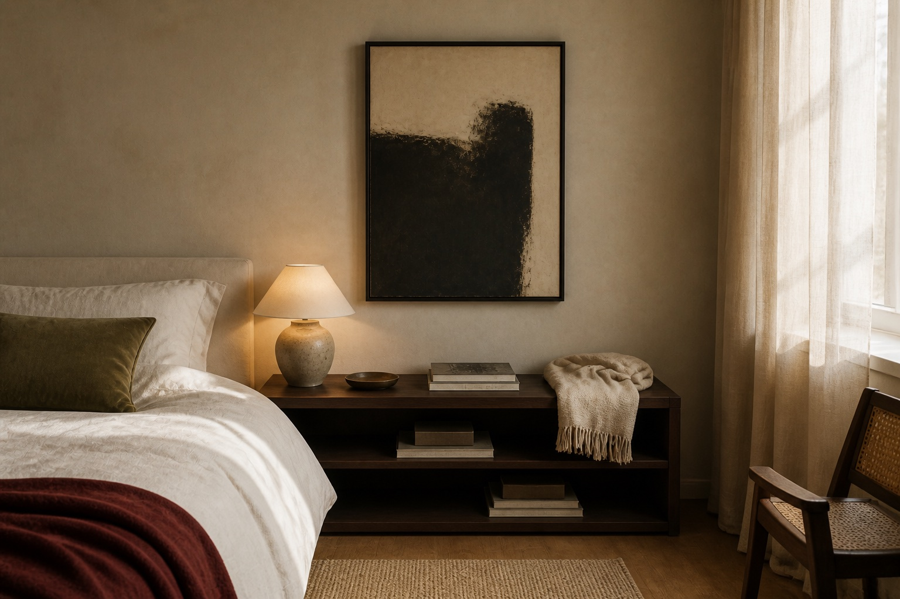
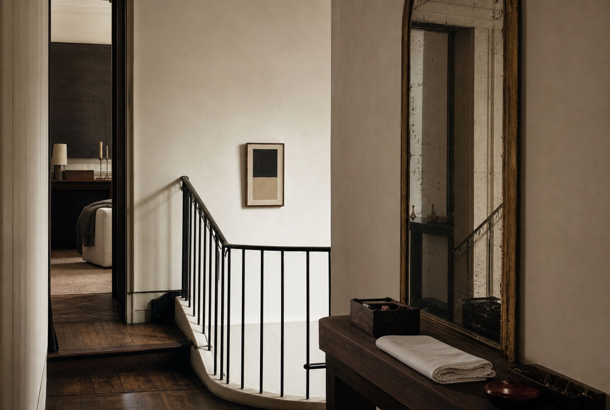
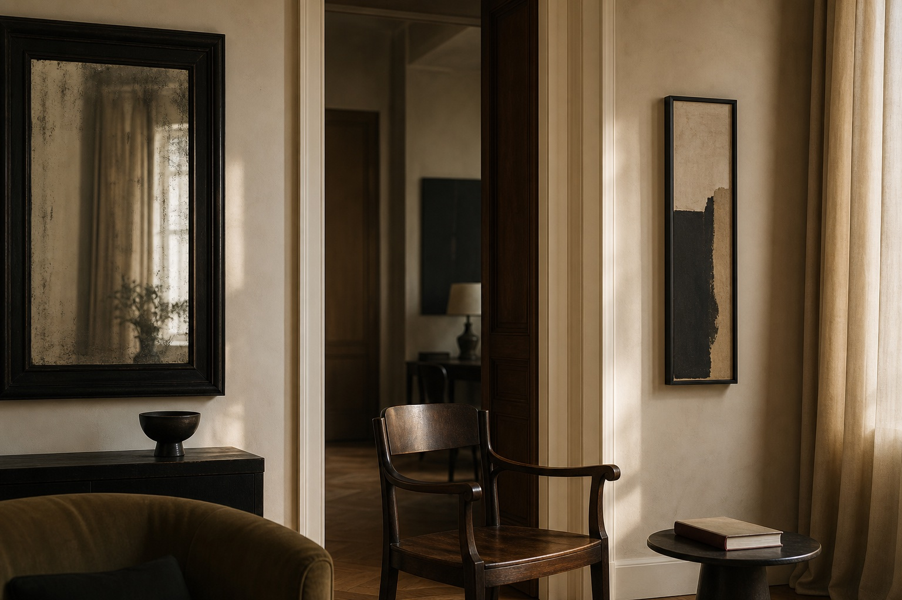
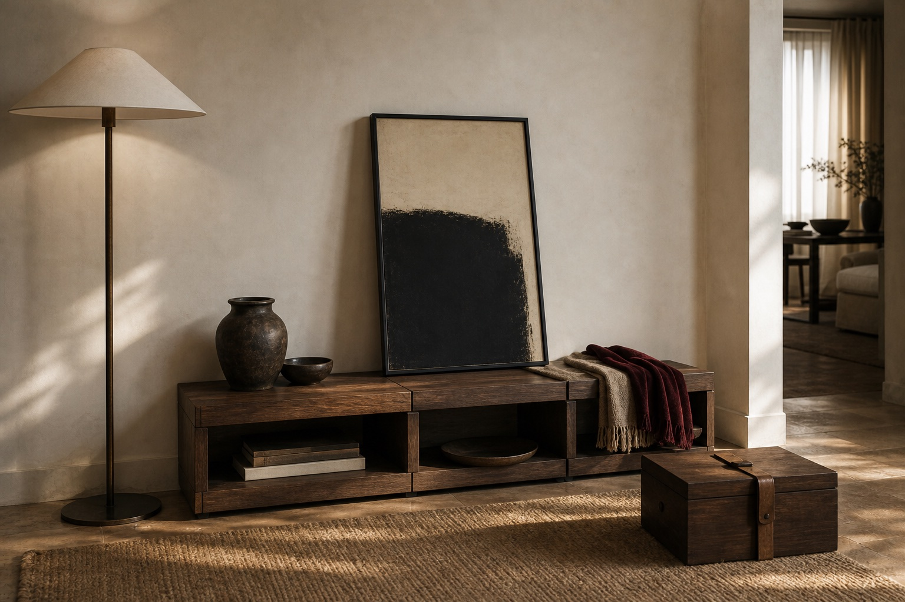
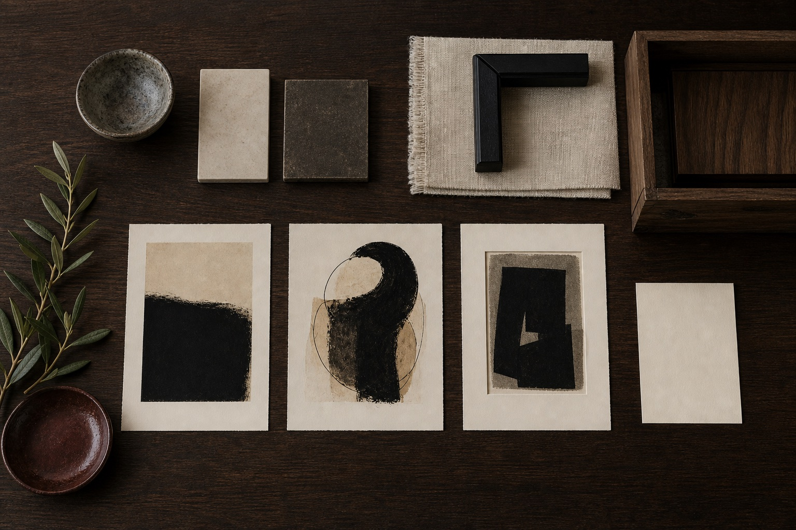

09:00 KST / Lookbook 01 / Released
House No. 01: The Quiet Black Gesture
어제의 결론을 실제 룩북으로 옮긴 첫 번째 하우스. 사용자가 올린 한 집의 여러 공간을 하나의 아트 스토리로 묶고, 각 방의 생활 단서를 명품식 하우스 코드처럼 편집한다.

Reference Grammar / not affiliated, no brand assets used
세 하우스에서 빌린 것은 로고가 아니라 편집 문법이다
art de vivre as room taxonomy
Dior Maison은 홈을 tableware, textile, decor, objects로 나누면서도 “timeless elegance, art de vivre, exceptional creations”라는 생활 미학으로 묶는다. 여기서는 사용자의 방을 팔레트, 직물, 오브제, 조도의 체계로 읽는다.
Sourceprivate appointment, coded address
31 Cambon의 힘은 주소, 서비스, 보존, 개인 응대가 하나의 세계로 느껴지는 데 있다. ELURA의 룩북도 “이 방의 코드를 읽는 개인 세션”처럼 말해야 한다.
Sourcefunctional object becomes collectible story
Objets Nomades는 실험적이면서 기능적인 가구와 오브제를 장인성, 디자이너, 여행성의 이야기로 올린다. 이 룩북에서는 벽의 그림도 방의 행동을 바꾸는 오브제로 다룬다.
Sourcelarge-format gaze and critical essay
Fashion Eye의 핵심은 장소를 한 사진가의 시선과 에세이로 재편집하는 방식이다. 집도 동일하게, 여러 방을 하나의 시선으로 재배열하면 단순 인테리어가 아니라 공간 에세이가 된다.
SourceReference URLs Used
https://www.dior.com/en_us/fashion/maison/maison https://www.chanel.com/us/about-chanel/inside-chanel/ https://www.chanel.com/us/fashion/services/boutique-31-cambon/ https://us.louisvuitton.com/eng-us/magazine/articles/the-objets-nomades-collection https://us.louisvuitton.com/eng-us/trunks-travel-and-home/library-and-stationery/fashion-eye/_/N-tiayzr9Spatial Essay
이 집은 검은 프레임을 반복해서 자기 리듬을 만든다

사용자는 “어떤 그림이 어울릴까요?”라고 묻지만, 방은 이미 답의 일부를 갖고 있다. 낮은 가구, 검은 선, 무광 종이, 올리브 섬유, 산화된 세라믹이 반복된다. 그래서 이 집의 아트는 색을 더하는 역할이 아니라, 이미 있는 검은 덩어리를 한 문장으로 압축하는 역할이다.
첫 번째 룩북은 브랜드풍 과장 대신 private appointment의 태도로 말한다. 한 집의 living, dining, bedroom, entry를 한 페이지에 펼치고, 각 공간에서 아트가 맡는 기능을 명확히 적는다.
시선을 고정하지만 광택을 만들지 않는다.
아래쪽 무게를 잡아 큰 그림을 과시로 보이지 않게 한다.
책, 열쇠, 수건이 남아 있어 사용자의 집이라는 증거가 된다.
Room Plates
네 공간, 네 개의 아트 역할
Living / anchor
the large work gives the room its first period.
소파와 선반의 수평선 위에 검은 필드를 올려 방의 중심 문장을 만든다.
Dining / echo
table mass answers the wall mass.
식탁 위 세라믹의 둥근 형태와 벽의 검은 붓질을 연결한다.

Bedroom / hush
the artwork lowers the voice of the room.
침대 옆 조명과 같은 높이에서 벽을 잠잠하게 누른다.

Entry / threshold
the smallest work creates the strongest pause.
거울, 열쇠, 수건이라는 생활 단서를 한 프레임으로 모아 귀가의 정지점을 만든다.
Zine Page / detachable
Do not erase the lived object.
이 집의 고급스러움은 비어 있음이 아니라 남겨진 것의 정확도에서 온다. 접힌 담요, 접시 더미, 열쇠, 반쯤 보이는 수건은 지워야 할 잡동사니가 아니라 아트가 들어갈 자리를 증명하는 스케일이다.
10:00 KST / Spatial Essay 02 / Released
House Code: Mirror, Threshold, Preservation
Chanel의 31 Cambon과 Inside Chanel에서 가져온 것은 특정 상징이 아니라, 주소가 곧 세계가 되고 반복되는 물건이 하우스 코드가 되는 방식이다. 이 페이지는 사용자의 집에서 거울, 문턱, 보존 행위를 찾아 개인 하우스 코드로 명명한다.

the threshold is treated as a private appointment.
입구와 복도는 지나가는 곳이 아니라, 사용자가 집의 리듬을 다시 만나는 첫 문장이다. 작은 아트는 이 문장을 과장 없이 고정한다.
reflection is proof of repetition.
거울은 공간을 넓히는 장치가 아니라, 같은 색과 선이 여러 방에서 반복되고 있음을 보여주는 증거다.
care objects turn art into service.
장갑, 접힌 천, 보존 상자는 “그림을 샀다”가 아니라 “공간을 관리한다”는 감각을 만든다.



11:00 KST / Zine 03 / Ready
Nomadic Object, Stationary Room
Louis Vuitton Objets Nomades에서 빌린 문법은 여행 가방의 모양이 아니라, 기능적 오브제를 디자이너의 시선과 장인성의 이야기로 올리는 방식이다. ELURA의 아트도 벽에 고정된 장식이 아니라, 방 사이를 이동하며 사용자의 리추얼을 바꾸는 오브제로 설명할 수 있다.
lean first, hang later.
처음부터 못을 박지 않는다. 벤치 위에 기대어 방의 무게를 테스트하고, 사용자가 실제로 멈추는 지점을 확인한다.
lamp, textile, vessel, work.
아트는 혼자 고급스러워지는 것이 아니라, 주변 오브제와 함께 기능을 얻는다. 조도, 촉감, 수납, 움직임이 한 문장이 된다.
the artwork carries a route.
거실에서 다이닝, 엔트리까지 이동 가능한 아트는 사용자가 어떤 공간에서 자신을 가장 잘 보는지 실험하게 한다.


Hourly Production Queue / 2026.06.23 KST
오늘은 매시간 실제 페이지를 추가한다
Maison Lookbook
한 집의 네 공간을 art de vivre식 생활 체계로 묶은 룩북.
Cambon Spatial Essay
주소, 거울, 계단, 보존 서비스 문법을 공간 에세이로 번역한 정식 릴리스.
Nomadic Object Zine
아트를 벽 장식이 아니라 이동 가능한 오브제와 기능으로 설명하는 공개 대기본.
Hourly alternates
룩북, 스토리북, 작은 zine, private portfolio를 매시간 다른 문법으로 추가.